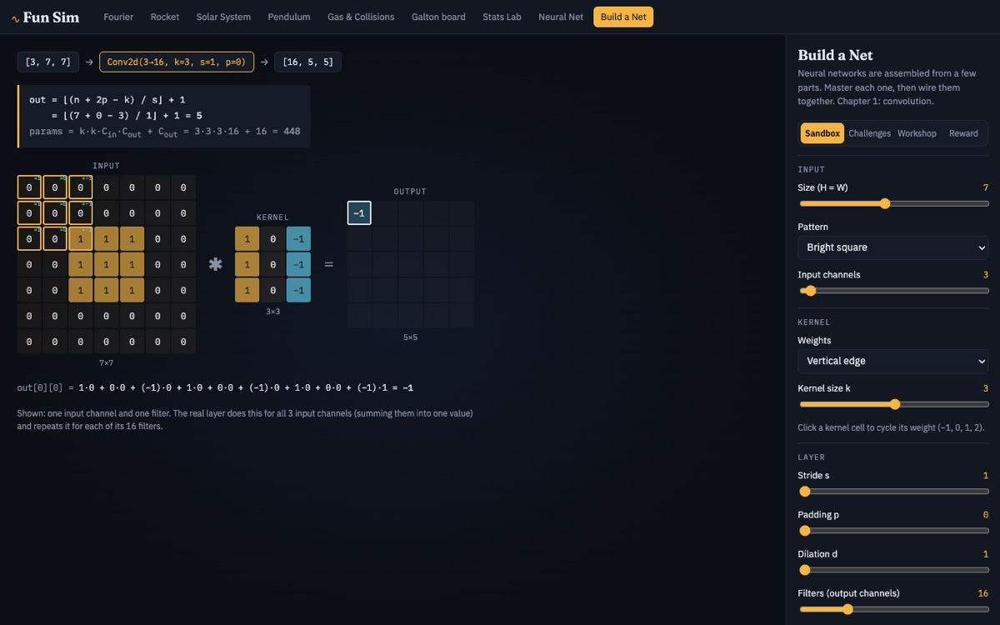

Build a Net
Learn how modern AI works by building it. Wire neural networks together from parts, with shapes checked at every connection and real numbers flowing through, one chapter per building block: convolutions, residual blocks, RNNs and LSTMs, attention, a full Transformer block, mixture-of-experts, and learning from reward.